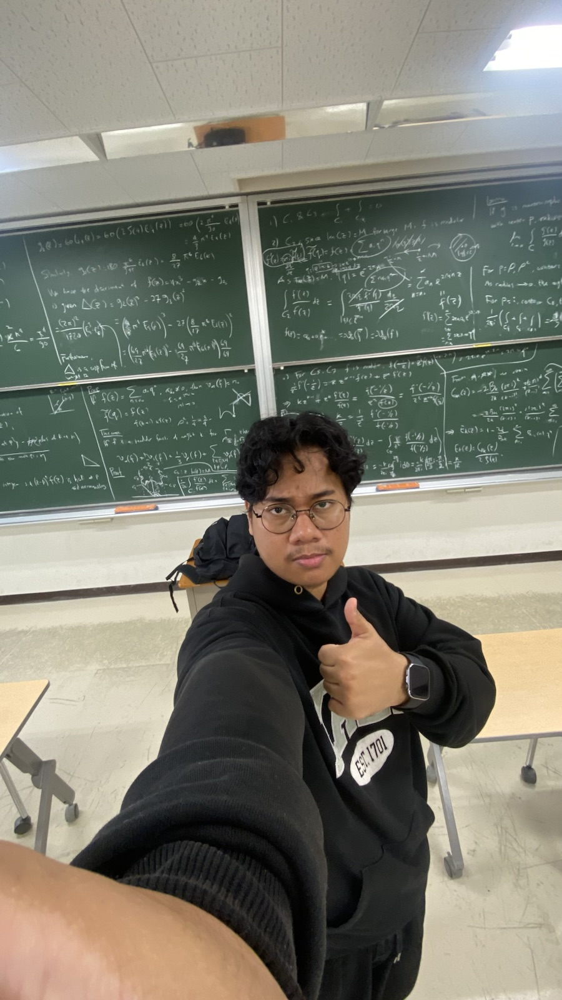
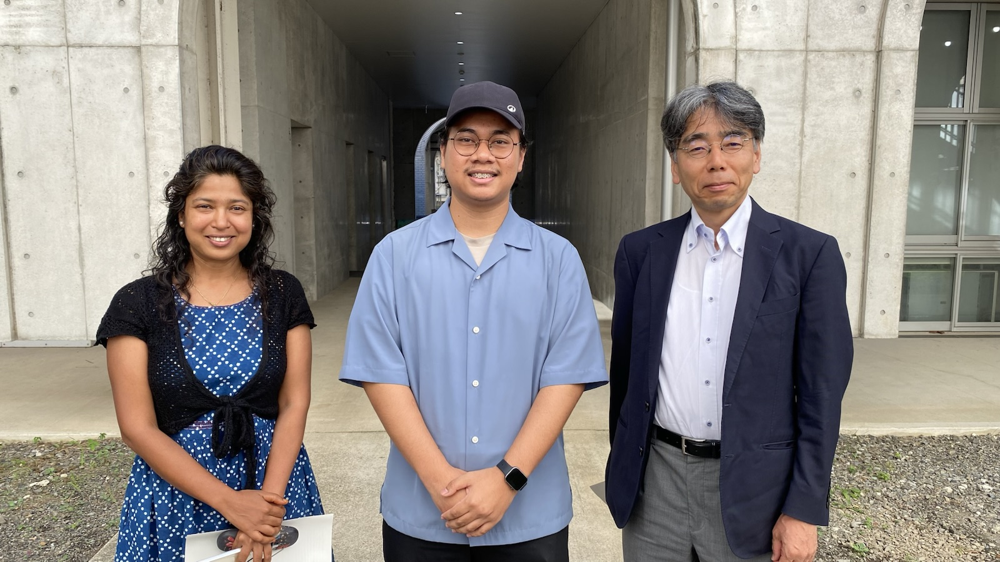

From April to August this year, I was grateful to participate as a YSEP research student at Institute of Science Tokyo, learning about modular forms under the supervision of Dr. Soma Purkait and Prof. Yuichiro Taguchi.

The goal was actually to understand the further study in modular forms, as I have been working on since my bachelor's thesis, to a more generalization. Dr. Soma once suggested the goal was to understand from modular forms to their L-functions (which generalise the Riemann zeta function, but as the research period was coming to an end, there was not enough time to reach the goal and stop at Hecke operators.
Most of the material follows Dr. Soma’s lecture notes from the modular forms course she taught a few years ago, together with Koblitz’s book, with some help from Diamond–Shurman and Serre.
Yes, shout-out to Orlando Ferrari’s lecture notes project, which inspired the way I made and wrote up these notes. (His website is cool, pls look at it)I don't claim my notes were perfect; please read and double-check the calculations; any mistakes are mine. If you spot one or have a suggestion, feel free to reach out on GitHub.

Grateful to Dr. Soma Purkait for accepting me as a research student under her supervision and for all her guidance throughout this program, as well as Prof. Yuichiro Taguchi for formally taking me under his name in this program, which made this research stay possible in the first place.